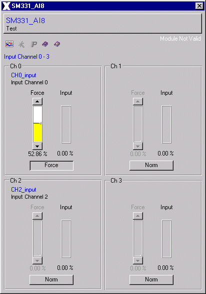

Figure 2: SM331 AI8 Graphical Representation
| Analog Input sm331_ai8 x 16Bit_7NF10 |
This analog input module SM 331 AI8 includes eight inputs with a selectable resolution 16 bit.
It can be used in a S7-300 or in a Profibus DP Slave-System (ET200M IM153).
The module converts the analog process
signal to a digital value with the selectet resolution.
Features | Installation | User Interface | Configuration | Implementation Notes | Modification History
The sm332_ai8_16bit_7NF10 class is comprised of the
following components (files):
| Class Component | Description | File Name(s) |
| Class Color File | Defines the local color for the class. | sm332_ai8_16bit_7NF10 .color |
| Class File | Includes the process picture
representation and any popup
menus. |
sm332_ai8_16bit _7NF10.symbol
|
| Symbol File | Symbol used in the class. | |
| Enumerator File | Defines the enumerator for the class. | sm332_ai8_16bit_7NF10 .enum |
| Graphic Files | Class Specific Graphic Files for both, class definition and documentation. | axclassdoku16.bmp
axclassdoku_grey16.bmp axinstanzdoku16.bmp axinstanzdoku_grey16.bmp axparam16.bmp axparam_grey16.bmp axservice16.bmp axservice_grey16.bmp axtrend16.bmp axtrend_grey16.bmp (and some documentation
|
| HTML Document | HTML document for Online Help. | sm331_ai8_16bit_7NF10.htm |
Features | Installation | User Interface | Configuration | Implementation Notes | Modification History
The SM331 AI8 user interface includes a process picture representation and several popup menus. The SM331 AI8 process representation is shown in Figure 2. The SM331 AI8 popup menus include two operater interfaces. One shows Figure 3 and the second is simular to the first operater interface for the other four channels.
The SM331 AI8 process picture has a unique name identifier ($Instance) for the SM331 AI8 displayed in the middle of the picture (SM331_AI8). Each channel is visualized by a slider and a value display. The first four channels are displayed above the unique name identifier and the other four below. If a channel's value is forced by using the operater interface the rectangle above the value display change its color to red. The rectangle at the top right signalled a service fault and the black rectangle at the bottom left shows the module position.
Figure 2: SM331 AI8 Graphical Representation
Using the left mouse
button down at one of sliders on SM331 AI8 process
representation causes
the Operations Interface window, Figure 3, to be
opened on the computer
screen.

Figure 3: SM331 AI8 Operations Interface
The SM331 AI8 operater graphic also includes the Instance name or the Analog Input SM331 AI8 and below it there is a comment describing the Analog Input unit. The button which hosts the Instance name and the comment can close the popup.
The operater interface is splitted in four parts, for each channel one. The right slider shows always the real input value. With the button at the bottom of each channel section the mode could be changed from normal mode to force mode. Then the input value can be force by the left slider which isn't sensitive as long as the button shows "Norm". This means that input value is simulated with a variable value edited by a slider to test the plc programs without any I/O's.
The right text above the channel section
signalled whether the module or the data is valid. This text dis appear
only if the module and the data is valid.
Features | Installation | User Interface | Configuration | Implementation Notes | Modification History
The "sm331_ai8.color" file contains the
SM331 AI8 class color definitions. This file holds all defined class color
schemes. The SM331 AI8 defined colors are:
| Color | Default RGB Values |
| S7-BG | 80/100/80 |
| S7-Label | 0/255/255 |
The "sm331_ai8.symbol" file contains the Analog Input SM331 AI8 class definition for AutomationX. This file holds the user interface, the pop-up menus, the class parameters, and the logic.
Features | Installation | User Interface | Configuration | Implementation Notes | Modification History
Qualities: The SM331 AI8 x 12Bit is characterized by the following qualities:
- 8 entries in 4 channel clusters
- measuring mode optional per channel cluster:
~ tension
~ current
- any measuring range selection per channel cluster
- parametriable diagnosis
- 2 channels with limit supervision
- parametriable boundary value alarm
Features | Installation | User Interface | Configuration | Implementation Notes | Modification History
The following table lists the modifications made
to the sm331_ai8_16bit_7NF10 class.
| Item | Date
(m/d/y) |
Name | File | Description | Reason |
| 1 | 11/11/02 | Ebner Gerald | Initial Design |
Features | Installation | User Interface | Configuration | Implementation Notes | Modification History